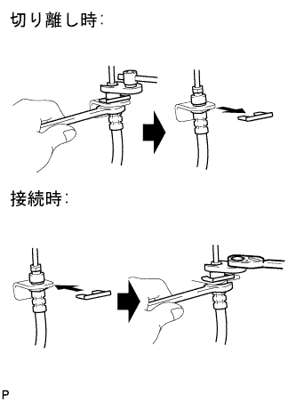
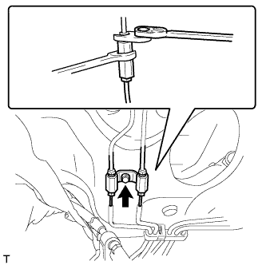

Brake Line Precaution |
 |
Hold the flexible hose with a wrench and, using a union nut wrench, disconnect the brake tube without deforming it.
Remove the clip and disconnect the flexible hose.
Secure the flexible hose with a new clip. At this time, securely install the clip all the way.
Using a union nut wrench, connect the brake tube without deforming it.
 |
While supporting the way so as not to deform the brake tube, connect the brake tube using a union nut wrench.
Support the way so as not to deform the brake tube, and connect the way to the body with the bolt.